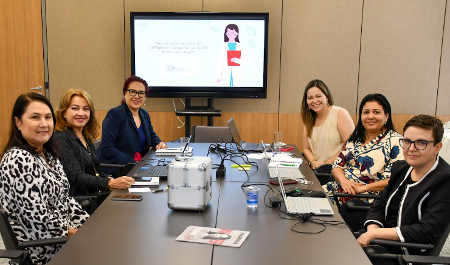

Tecnologia👨💻
Clonagem de Vozes por IA
Em uma reviravolta surpreendente no mundo da tecnologia e da propriedade intelectual, um casal de dubladores, Paul Skye Lehrman e Linnea Sage, entrou com uma ação judicial contra a empresa de inteligência artificial Lovo. A acusação? A Lovo teria, sem consentimento, clonado e comercializado as vozes do casal, gerando uma onda de preocupações sobre privacidade e ética na IA.
O caso veio à tona quando Lehrman e Sage, enquanto ouviam um podcast, reconheceram suas próprias vozes sendo usadas sem a sua autorização. A voz de Lehrman foi identificada em um episódio que discutia o impacto da IA na indústria do entretenimento, uma ironia considerando a profissão do casal e o conteúdo da discussão. Sage encontrou sua voz clonada no site da Lovo, o que a deixou "impressionada" e "incrédula".
A Lovo, conhecida por seu software de clonagem de voz, permite que usuários criem versões digitais de suas vozes com apenas algumas gravações. Tom Lee, um dos fundadores da empresa, havia explicado anteriormente que o software poderia capturar nuances como tom, estilo e sotaque. No entanto, Lehrman e Sage afirmam que suas vozes foram gravadas sob falsos pretextos e utilizadas pela Lovo para criar clones de IA que foram vendidos, possivelmente, centenas de milhares de vezes.
Este incidente levanta questões significativas sobre os limites da tecnologia de IA e os direitos de propriedade intelectual. Como a voz de uma pessoa pode ser protegida quando a tecnologia permite sua replicação exata? E quais são as implicações éticas de usar essas vozes clonadas, especialmente sem o consentimento dos indivíduos originais?
O processo contra a Lovo destaca a necessidade de regulamentações mais rígidas e claras no campo da IA, especialmente à medida que a tecnologia avança e se torna mais integrada em nossas vidas diárias. A ação também reflete um crescente movimento de artistas e criadores que buscam proteger seu trabalho e identidade em uma era digital cada vez mais complexa.
A resposta da Lovo ao processo ainda é desconhecida, mas o caso já está repercutindo no setor de tecnologia e além, potencialmente estabelecendo um precedente importante para o futuro da propriedade intelectual na era da inteligência artificial.
Bolsa de valores📈
Ibovespa em Queda
Os mercados financeiros enfrentam um dia de tensão nesta quarta-feira, 4 de setembro de 2024, impulsionados por preocupações com a economia dos Estados Unidos. O foco está voltado para o relatório de abertura de vagas de emprego, conhecido como Jolts, e o Livro Bege do Federal Reserve, que oferecem uma visão detalhada da situação econômica americana. Esses indicadores são cruciais, especialmente em um contexto onde o índice VIX, que mede a volatilidade do mercado e é considerado um "termômetro do medo", disparou quase 10%, refletindo a aversão ao risco dos investidores.
A pressão sobre os mercados é intensificada pela recente queda nas ações do setor de tecnologia, com destaque para a Nvidia, que sofreu uma queda de 8% após ser alvo de uma intimação antitruste. Essa situação contribui para um ambiente de incerteza, especialmente com dados industriais indicando uma possível desaceleração da economia americana.
No Brasil, a aversão ao risco no exterior e a queda de 3,09% do minério de ferro na China impactaram negativamente a Bolsa de Valores, que já havia registrado quatro sessões consecutivas de baixa. O Ibovespa fechou a 134.353,48 pontos, praticamente anulando os ganhos acumulados no ano. Os investidores também aguardam a divulgação do Plano Anual de Financiamento (PAF) de 2024 pelo Tesouro Nacional e a coletiva sobre o Relatório Mensal da Dívida Pública, que podem influenciar a percepção do mercado sobre a saúde fiscal do país.
Além disso, a expectativa de uma alta na taxa Selic na próxima reunião do Copom ganhou força após a divulgação de dados econômicos positivos, que podem levar a um ciclo mais longo de aperto monetário. A combinação de incertezas externas e ajustes internos coloca os investidores em um estado de vigilância, à medida que buscam sinais de estabilidade em meio a um cenário volátil.
Saúde
CFF Busca Ampliar Serviços e Parcerias com o Governo
O Conselho Federal de Farmácia (CFF) realizou uma reunião significativa com o Secretário de Atenção Primária à Saúde, Dr. Felipe Proenço de Oliveira, para discutir a ampliação da atuação dos farmacêuticos no Sistema Único de Saúde (SUS). Este encontro, ocorrido em 3 de setembro de 2024, reflete o compromisso contínuo do CFF em fortalecer e expandir as parcerias com as gestões federais, estaduais e municipais.
A reunião teve como foco principal as demandas relacionadas à atuação dos farmacêuticos nas farmácias e seu papel vital na saúde pública do Brasil. O CFF enfatizou a importância de ampliar a presença dos profissionais farmacêuticos nos diversos pontos de atenção à saúde, reconhecendo suas contribuições significativas em várias frentes de atendimento no SUS, que serve aproximadamente 140 milhões de brasileiros.
O CFF está determinado a promover a integração dos farmacêuticos nas equipes de saúde, visando melhorar a qualidade do atendimento e a eficiência dos serviços prestados. A expansão dessa atuação é vista como uma estratégia essencial para enfrentar os desafios da saúde pública e garantir um acesso mais amplo e qualificado aos serviços farmacêuticos.
A discussão também abordou a necessidade de reconhecimento do farmacêutico como um profissional fundamental nas equipes de atenção primária, destacando o papel crucial que desempenham na promoção da saúde, prevenção de doenças e no manejo de condições crônicas.
Este encontro entre o CFF e o Secretário de Atenção Primária à Saúde é um passo promissor na direção de uma colaboração mais estreita entre os farmacêuticos e o governo, buscando aprimorar a saúde pública e o bem-estar da população brasileira. Para mais informações sobre esta reunião e outras iniciativas do CFF, visite o site oficial.